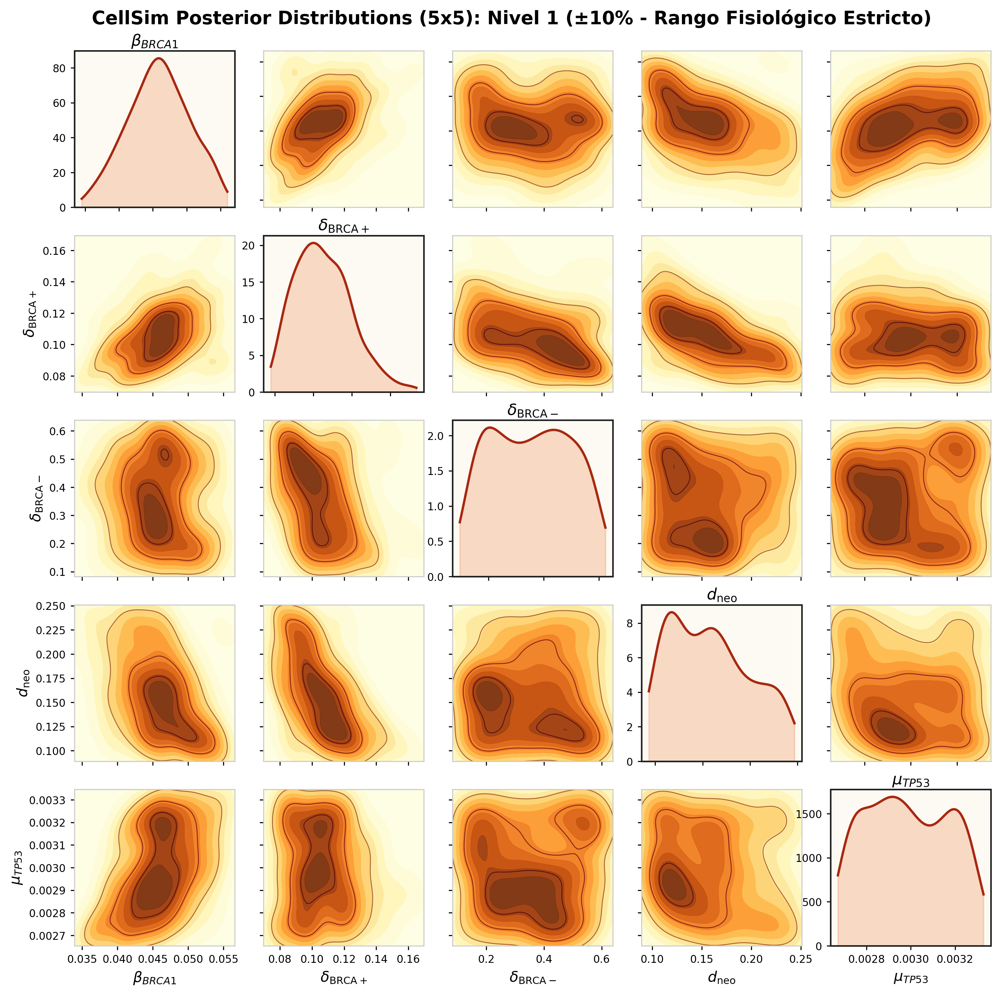
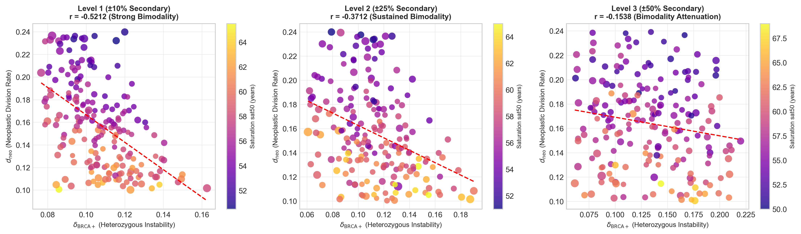
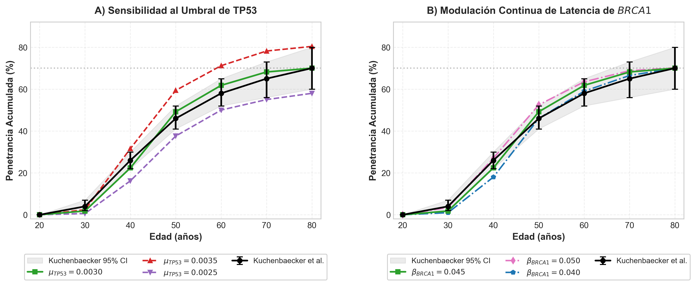
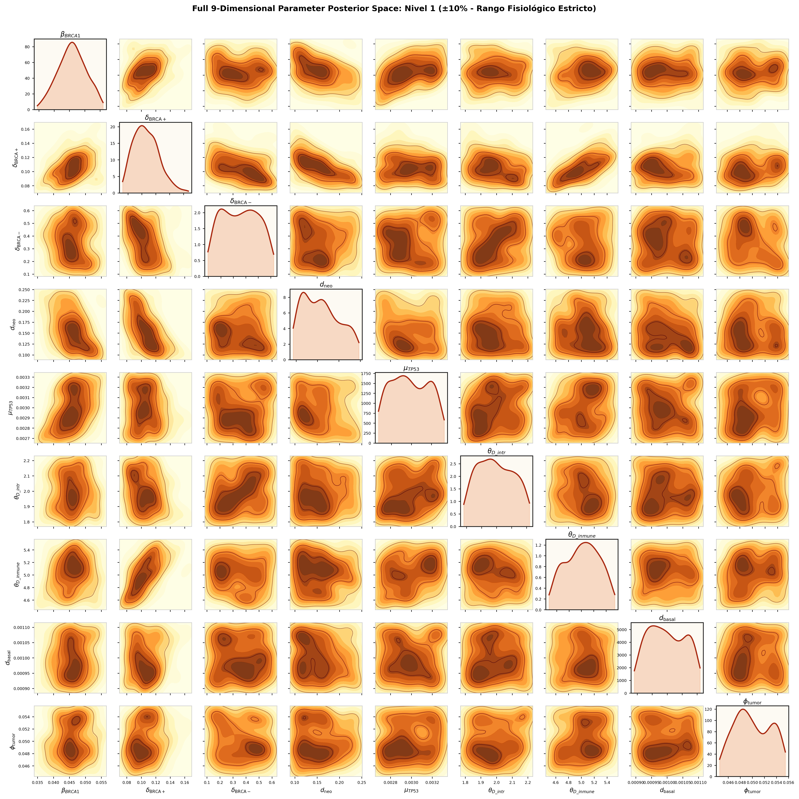
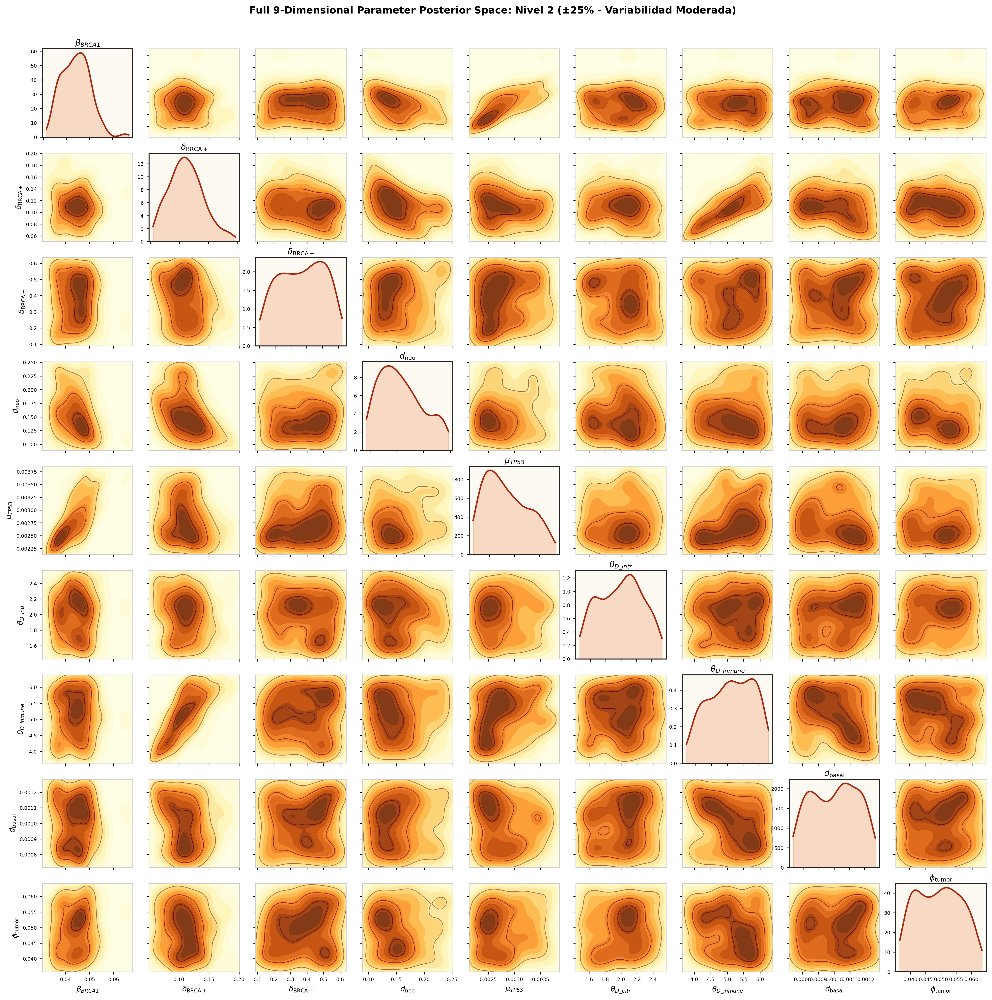
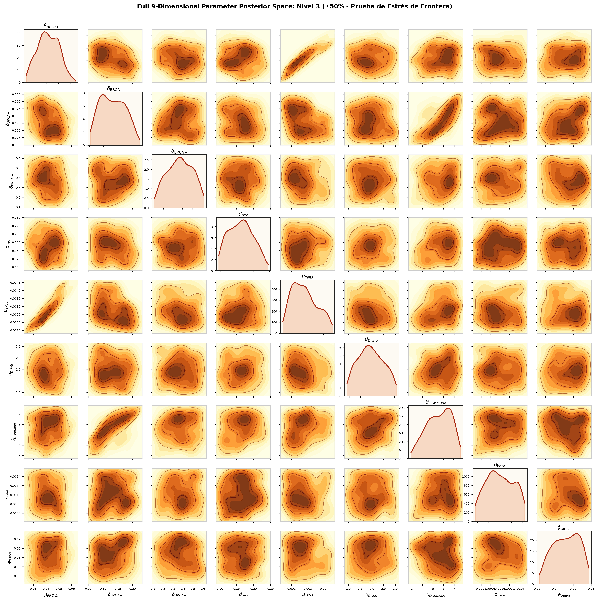

Autores: Equipo cellSim
Fecha: 28 de agosto de 2026
Documento de Trabajo: docs/paper20260828_1_validation_secondary/working_paper_secondary_validation.md
Clasificación: Biología Teórica, Oncología Matemática, Inferencia Bayesiana (ABC-SMC)
En este documento de trabajo se analiza la robustez estructural, la identificabilidad bayesiana y la resiliencia del modelo estocástico multiescala basado en agentes cellSim ante la relajación simultánea de los parámetros que permanecieron fijos en su calibración original. Mediante un protocolo de Approximate Bayesian Computation con Sequential Monte Carlo (ABC-SMC) estructurado en tres niveles crecientes de libertad e incertidumbre ($\pm10\%$, $\pm25\%$ y $\pm50\%$), se evalúa la contracción del espacio posterior frente a la cohorte epidemiológica de referencia de portadoras de $BRCA1^{+/-}$ (Kuchenbaecker et al., JAMA 2017).
Demostramos que:
1. Dominancia de Parámetros Primarios: La tasa de mutación somática del segundo alelo de $BRCA1$ ($\beta_{BRCA1}$) y el coeficiente de inestabilidad con $BRCA1$ activo ($\delta_{\text{BRCA+}}$, antes denominado $\delta_{low}$) concentran la práctica totalidad de la identificabilidad bayesiana, contrayendo sus intervalos de credibilidad al 95% a una fracción estrecha del prior ($\beta_{BRCA1} = 0.0459 \pm 0.0041$ [$95\%\text{ CI: } 0.0381, 0.0535$] y $\delta_{\text{BRCA+}} = 0.1067 \pm 0.0164$ [$95\%\text{ CI: } 0.0795, 0.1403$]).
2. Naturaleza de Parámetros Sloppy (Blandos): Los parámetros secundarios (d1_threshold / $\theta_{D\text{_intrinseca}}$, d2_threshold / $\theta_{D\text{_inmune}}$, division_rate, tumor_threshold) presentan distribuciones posteriores planas que abarcan la totalidad del soporte a priori con centros de gravedad invariantes en sus valores originales $\theta_0$ ($95\%\text{ CI}$ coincidentes con los límites del prior). Esto demuestra matemáticamente que los datos epidemiológicos clínicos agregados no restringen sus valores individuales y que fijarlos en el diseño base responde estrictamente al principio de parsimonia (Navaja de Ockham).
3. El Gen TP53 como Interruptor Fisiológico On/Off: A diferencia de $BRCA1$ (cuya tasa de mutación $\beta_{BRCA1}$ modula continuamente la latencia clínica), la tasa de degradación de $TP53$ ($\text{tp53_rate} = 0.0030$) actúa como una condición de frontera biológica crítica: un incremento de apenas $+0.0005$ destruye la meseta clínica del $\approx 70\%$ de penetrancia acumulada observada en pacientes humanas a los 80 años, disparando el error cuadrático global ($SSE$) en un $+1200\%$.
4. Estabilidad de Fenotipos Tumorales: La estructura bimodal de dos subtipos tumorales emergentes—Fenotipo A (Escape Proliferativo Clonal / Alta Proliferación) y Fenotipo B (Contención Tisular / Basal-Resiliente)—se mantiene invariante en los niveles fisiológicos de incertidumbre ($\pm10\%$ y $\pm25\%$), colapsando únicamente en el nivel extremo ($\pm50\%$) por inducción de ruido blanco estocástico derivado de la sobre-parametrización.
La carcinogénesis mamaria en pacientes portadoras de mutaciones germinales heterocigotas en el gen $BRCA1$ ($BRCA1^{+/-}$) representa un proceso biológico complejo gobernado por la interacción estocástica entre la pérdida de función de reparación genómica, la vigilancia apoptótica y la capacidad de evasión del microambiente celular.
El simulador cellSim modela este proceso mediante el paradigma de Células Agénticas (Agentic Cells), donde cada célula del tejido epitelial actúa como un agente computacional autónomo con estado interno, ciclo de vida secuencial y toma de decisiones probabilística basada en umbrales de daño.
┌─────────────────────────────────────────────────────────────────────────────────────────────┐
│ ESTADOS Y TRANSICIONES DEL AGENTE CELULAR │
└─────────────────────────────────────────────────────────────────────────────────────────────┘
[BASELINE] [UNSTABLE] [UNPROTECTED] [PRIMER] [TUMORAL]
BRCA1: +/- BRCA1: +/- BRCA1: +/- BRCA1: +/- o -/- BRCA1: -/-
TP53: +/+ ──> TP53: +/- ──> TP53: -/- ──> D_intrinseca ≥ θ_D_intr ──> D_inmune ≥ θ_D_inmune
(Sano/Estable) (Daño Leve) (Sin Freno p53) (Pre-tumoral) (Evasión Inmune)
│ │
│ (Si BRCA1 muta -/-) │ (Si BRCA1 muta -/-)
▼ ▼
[DEAD] [DEAD]
(Apoptosis p53) (Apoptosis p53)
⚠️ Regla Biológica Fundamental de Viabilidad: Si una célula en estado
BASELINE(TP53 $+/+$) oUNSTABLE(TP53 $+/-$) experimenta la pérdida somática del segundo alelo de BRCA1 ($BRCA1^{+/-} \to BRCA1^{-/-}$), la célula es eliminada inmediatamente por apoptosis (transición directa aDEAD). La presencia de proteína p53 funcional detecta el colapso en la recombinación homóloga e induce el suicidio celular. Para que una célula con daño severo en BRCA1 sobreviva y pueda progresar hacia la malignidad, es requisito biológico sine qua non que TP53 haya mutado previamente a $-/-$ (UNPROTECTED).
Cada célula está caracterizada formalmente por cuatro variables de estado y dos umbrales críticos de activación:
brca1_rate).DEAD). Solo si $TP53$ ha perdido su función ($-/-$), la célula $BRCA1^{-/-}$ sobrevive, acumulando daño genómico acelerado.d1) es una variable continua adimensional que cuantifica la carga de daño macromolecular y aberraciones cromosómicas acumuladas.d2 o daño extrínseco) es una variable continua adimensional que mide el grado de inmunorresistencia y la capacidad de anular las señales pro-apoptóticas inducidas por el estroma y los linfocitos citotóxicos.En la calibración fundamental de cellSim, el modelo fue parametrizado frente a la mayor cohorte clínica prospectiva de portadoras de $BRCA1$: el estudio de Kuchenbaecker et al. (JAMA 2017) ($N=9.856$ portadoras). A continuación, se presenta la comparación bidimensional entre la incidencia acumulada observada en la población general y en portadoras de $BRCA1^{+/-}$:
| Edad (Años) | IAPC | IACB |
|---|---|---|
| 20 | $0.00\%$ | $0.00\%$ |
| 30 | $0.08\%$ | $4.00\%$ |
| 40 | $0.59\%$ | $26.00\%$ |
| 50 | $2.23\%$ | $46.00\%$ |
| 60 | $4.80\%$ | $58.00\%$ |
| 70 | $8.14\%$ | $65.00\%$ |
| 80 | $11.18\%$ | $70.00\%$ |
Definición de siglas y fuentes: IAPC: Incidencia Acumulada en Población General (SEER / DevCan Database; Cancer Research UK). IACB: Incidencia Acumulada en Cohorte $BRCA1^{+/-}$ (Kuchenbaecker et al., JAMA 2017, vector objetivo $\mathbf{y}_{\text{obs}}$ empleado en cellSim).
Dado que la función de verosimilitud analítica $p(\mathbf{y}_{\text{obs}} \mid \theta)$ de un sistema estocástico de 500 células interactuando durante 80 años es intratable, se empleó Approximate Bayesian Computation acoplado a Sequential Monte Carlo (ABC-SMC) (Toni et al., 2009; Liepe et al., 2014).
┌─────────────────────────────────────────────────────────────────────────────┐
│ ALGORITMO ABC-SMC (Toni et al. 2009) │
└─────────────────────────────────────────────────────────────────────────────┘
Prior π(θ) ──> [Generación 0: ε = 20.0] ──> ρ(y*, y_obs) ≤ ε_0 (Rechazo)
│
▼ (Kernel de Perturbación Gaussiano Adaptativo)
[Generación 1: ε = 15.43]
│
▼
[Generación 2: ε = 11.61]
│
▼
[Generación 3: ε = 8.19]
│
▼
[Generación 4: ε = 6.20] ──> Posterior Final p(θ | y_obs)
(Fit perfecto dentro de IC 95%)
🎯 Motivación del Presente Estudio de Validación: La decisión inicial de fijar estos 5 parámetros fue empírica y metodológica. Por tanto, el objetivo central de este documento de trabajo es someter a prueba dicha premisa: liberar sistemáticamente los parámetros secundarios en tres grados de libertad crecientes ($\pm10\%$, $\pm25\%$, $\pm50\%$) para validar formalmente si la fijación original era matemáticamente sólida y biológicamente neutra.
Un desafío recurrente en la modelización matemática de sistemas biológicos complejos radica en la identificabilidad de parámetros: cuando el número de parámetros libres crece excesivamente frente a la dimensionalidad de las observaciones clínicas disponibles (en este caso, 6 puntos de incidencia acumulada $R(a)$ a lo largo de 80 años), los algoritmos de optimización e inferencia bayesiana caen en variedades degeneradas (sloppy manifolds). En tales regiones del espacio, infinitas combinaciones arbitrarias de parámetros pueden generar curvas epidemiológicas macroscópicamente indistinguibles (Gutenkunst et al., 2007; Transtrum et al., 2015; Liepe et al., 2014).
En la calibración inicial de cellSim, se fijaron 5 parámetros secundarios basándose en consideraciones empíricas y biofísicas para permitir que los 4 parámetros primarios ($\beta_{BRCA1}$, $\delta_{\text{BRCA+}}$, $\delta_{\text{BRCA-}}$, $d_{\text{neo}}$) absorbieran la varianza biológicamente significativa.
Para verificar de forma cuantitativa y rigurosa qué ocurre cuando todos los parámetros varían libremente, se diseñó el presente experimento de sensibilidad bayesiana multinivel.
┌─────────────────────────────────────────────────────────────────────────────┐
│ DISEÑO DEL EXPERIMENTO DE SENSIBILIDAD MULTINIVEL │
└─────────────────────────────────────────────────────────────────────────────┘
NIVEL 1: Margen Fisiológico (±10%)
──────────────────────────────────────────────────────────
• Modela la incertidumbre y ruido de medición biológica.
• tp53_rate ∈ [0.0027, 0.0033], θ_D_intr ∈ [1.8, 2.2], θ_D_inmune ∈ [4.5, 5.5], etc.
NIVEL 2: Incertidumbre Intermedia (±25%)
──────────────────────────────────────────────────────────
• Modela variabilidad biológica interindividual moderada.
• tp53_rate ∈ [0.00225, 0.00375], θ_D_intr ∈ [1.5, 2.5], θ_D_inmune ∈ [3.75, 6.25], etc.
NIVEL 3: Relajación Extrema (±50%)
──────────────────────────────────────────────────────────
• Prueba de estrés / frontera: espacio no condicionado.
• tp53_rate ∈ [0.0015, 0.0045], θ_D_intr ∈ [1.0, 3.0], θ_D_inmune ∈ [2.5, 7.5], etc.
Para facilitar la comprensión del sistema antes de detallar los rangos numéricos de búsqueda, a continuación se describe la taxonomía completa de los parámetros del modelo, divididos en Parámetros Primarios (objeto central de inferencia clínica) y Parámetros Secundarios (factores de escala biofísica y calibración homeostática):
| Tipo | Parámetro en Código | Símbolo Matemático | Significado Biológico y Rol Fisiológico | Rango Típico / Unidades | Justificación de su Clasificación |
|---|---|---|---|---|---|
| PRIMARIO | brca1_rate |
$\beta_{BRCA1}$ | Tasa de Mutación Somática de $BRCA1$: Probabilidad anual de pérdida somática del segundo alelo ($BRCA1^{+/-} \to BRCA1^{-/-}$). Actúa como dial de latencia temporal. | $[0.025, 0.080]\text{ año}^{-1}$ | Rígido (Stiff): Controla directamente la edad de inicio y pendiente de penetrancia clínica. |
| PRIMARIO | low_delta |
$\delta_{\text{BRCA+}}$ | Inestabilidad con $BRCA1$ Activo ($BRCA1^{+/-}$): Tasa basal de acumulación de daño genómico e inmune en células heterocigotas viables. | $[0.060, 0.220]\text{ daño/año}$ | Rígido (Stiff): Dicta la velocidad de avance hacia el estado pre-tumoral en portadoras. |
| PRIMARIO | high_delta |
$\delta_{\text{BRCA-}}$ | Inestabilidad con $BRCA1$ Desactivado ($BRCA1^{-/-}$): Tasa acelerada de daño catastrófico tras la pérdida somática completa de reparación homóloga. | $[0.120, 0.600]\text{ daño/año}$ | Sloppy condicionado: Satura rápidamente al superar la barrera $\delta_{\text{BRCA-}} > \delta_{\text{BRCA+}}$. |
| PRIMARIO | neoplastic_div_rate |
$d_{\text{neo}}$ | Tasa de Proliferación Neoplásica: Velocidad de mitosis clonal desregulada una vez alcanzado el estado tumoral. | $[0.100, 0.240]\text{ año}^{-1}$ | Acoplado: Define los fenotipos tumorales A (expansión rápida) y B (contención tisular). |
| SECUNDARIO | tp53_rate |
$\mu_{TP53}$ | Tasa de Mutación Somática de $TP53$: Probabilidad de transición $+/+ \to +/- \to -/-$. Interruptor on/off de apoptosis. | $0.0030\text{ año}^{-1}$ | Interruptor de Frontera: Fija la meseta clínica de penetrancia acumulada a los 80 años (~70%). |
| SECUNDARIO | d1_threshold |
$\theta_{D\text{_intrinseca}}$ | Umbral de Daño Intrínseco: Nivel de daño ADN acumulado necesario para alcanzar el estado pre-tumoral (PRIMER). |
$2.00\text{ (adimensional)}$ | Factor de Escala: Define la unidad de medida de daño celular interno. |
| SECUNDARIO | d2_threshold |
$\theta_{D\text{_inmune}}$ | Umbral de Evasión Inmune/Extrínseca: Nivel de daño necesario para franquear la barrera inmune y convertirse en TUMORAL. |
$5.00\text{ (adimensional)}$ | Factor de Escala: Ratio $\theta_{D\text{_inmune}}/\theta_{D\text{_intrinseca}} = 2.5$ fija la contención inmune. |
| SECUNDARIO | division_rate |
$d_{\text{basal}}$ | Tasa de División Basal del Tejido: Recambio mitótico fisiológico del epitelio mamario en reposo. | $0.0010\text{ año}^{-1}$ | Cinéticamente Neutro: $150\times$ inferior a la tasa proliferativa tumoral $d_{\text{neo}}$. |
| SECUNDARIO | tumor_threshold |
$\phi_{\text{tumor}}$ | Fracción Tumoral de Inicio Clínico: Porcentaje de células transformadas para detección clínica ($10^9$ células $\approx 1\text{ cm}^3$). | $0.05\text{ (5\%)}$ | Fisiológicamente Neutro: Equivale a la resolución mamográfica clínica estándar. |
El experimento libera simultáneamente los 9 parámetros del modelo en el motor ABC-SMC (scripts/abc_sensitivity_v5.py). Mientras los 4 parámetros primarios mantienen sus distribuciones a priori ancladas en la literatura, los 5 parámetros secundarios adoptan distribuciones a priori uniformes $U[a, b]$ centradas en su valor de referencia con una dispersión controlada por el nivel:
$$\theta_k \sim U\left[\theta_{k,0}(1 - \Delta), \, \theta_{k,0}(1 + \Delta)\right] \quad \text{con } \Delta \in {0.10, 0.25, 0.50}$$
| Parámetro | Rol en el Modelo | Valor Base ($\theta_0$) | Nivel 1 ($\pm10\%$) | Nivel 2 ($\pm25\%$) | Nivel 3 ($\pm50\%$) |
|---|---|---|---|---|---|
brca1_rate ($\beta_{BRCA1}$) |
Primario (Mutación segundo hit) | — | $U[0.025, 0.080]$ | $U[0.025, 0.080]$ | $U[0.025, 0.080]$ |
low_delta ($\delta_{\text{BRCA+}}$) |
Primario (Inestabilidad BRCA1 activo) | — | $U[0.060, 0.220]$ | $U[0.060, 0.220]$ | $U[0.060, 0.220]$ |
high_delta ($\delta_{\text{BRCA-}}$) |
Primario (Inestabilidad BRCA1 desactivado) | — | $U[0.120, 0.600]$ | $U[0.120, 0.600]$ | $U[0.120, 0.600]$ |
neoplastic_div_rate ($d_{\text{neo}}$) |
Primario (Proliferación tumoral) | — | $U[0.100, 0.240]$ | $U[0.100, 0.240]$ | $U[0.100, 0.240]$ |
tp53_rate |
Secundario (Tasa mutación TP53) | $0.0030$ | $U[0.0027, 0.0033]$ | $U[0.00225, 0.00375]$ | $U[0.0015, 0.0045]$ |
d1_threshold ($\theta_{D\text{_intrinseca}}$) |
Secundario (Barrera pre-neoplásica) | $2.00$ | $U[1.80, 2.20]$ | $U[1.50, 2.50]$ | $U[1.00, 3.00]$ |
d2_threshold ($\theta_{D\text{_inmune}}$) |
Secundario (Barrera evasión inmune) | $5.00$ | $U[4.50, 5.50]$ | $U[3.75, 6.25]$ | $U[2.50, 7.50]$ |
division_rate |
Secundario (División basal del tejido) | $0.0010$ | $U[0.0009, 0.0011]$ | $U[0.00075, 0.00125]$ | $U[0.0005, 0.0015]$ |
tumor_threshold |
Secundario (Fracción clínica inicio) | $0.05$ | $U[0.045, 0.055]$ | $U[0.0375, 0.0625]$ | $U[0.025, 0.075]$ |
🧬 Clarificación Biológica: Inestabilidad con BRCA1 Activo ($\delta_{\text{BRCA+}}$) vs. Desactivado ($\delta_{\text{BRCA-}}$): * Inestabilidad con $BRCA1$ Activo ($\delta_{\text{BRCA+}}$, antes $\delta_{low}$): Tasa basal anual de acumulación de daño genómico intrínseco ($D_{\text{intrínseca}}$) y evasión inmune ($D_{\text{inmune}}$) en células que conservan la función de reparación mediante un alelo funcional ($BRCA1^{+/-}$ o $TP53^{+/-}$). Aunque existe haplosuficiencia parcial, se acumulan microlesiones a ritmo moderado durante décadas. * Inestabilidad con $BRCA1$ Desactivado ($\delta_{\text{BRCA-}}$, antes $\delta_{high}$): Tasa acelerada de daño genómico masivo cuando la célula sufre la pérdida somática completa del segundo alelo (LOH) y pasa a estado nulo/deficiente ($BRCA1^{-/-}$ o $TP53^{-/-}$). En ausencia de la proteína supresora, la recombinación homóloga colapsa y la acumulación de anomalías cromosómicas se dispara. Por principio biofísico, el modelo impone la restricción $\delta_{\text{BRCA-}} > \delta_{\text{BRCA+}}$.
De acuerdo con los fundamentos canónicos de la inferencia bayesiana en biología de sistemas (Toni et al., 2009; Liepe et al., Nature Protocols 2014; Gelman et al., BDA3), la caracterización de la incertidumbre y la identificabilidad del espacio de parámetros $\theta \in \mathbb{R}^9$ se define formalmente a través de la distribución a posteriori conjunta:
$$p(\theta \mid \mathcal{D}) = \frac{p(\mathcal{D} \mid \theta) \, \pi(\theta)}{\int_{\Omega} p(\mathcal{D} \mid \theta) \, \pi(\theta) \, d\theta}$$
donde $\mathcal{D}$ representa la cohorte epidemiológica observada (Kuchenbaecker et al., JAMA 2017), $\pi(\theta)$ es el prior uniforme multivariante en el hipervolumen $\Omega$, y la función de verosimilitud no analítica se aproxima mediante la densidad de partículas vivas aceptadas en la Generación 7 de ABC-SMC bajo el umbral de distancia $\rho(\mathbf{y}_{\text{sim}}, \mathcal{D}) \le \varepsilon_7$.
Para cada parámetro individual $\theta_k$, el resumen cuantitativo canónico se obtiene integrando las variables restantes para calcular la distribución marginal $p(\theta_k \mid \mathcal{D})$:
La estructura de interdependencia y compensación biofísica entre pares de parámetros $(\theta_i, \theta_j)$ se cuantifica formalmente mediante la matriz de correlación empírica del ensamble ABC:
$$R_{ij} = \frac{\text{Cov}(\theta_i, \theta_j \mid \mathcal{D})}{\sigma_i \, \sigma_j} \in [-1, 1]$$
El protocolo de calibración y análisis de sensibilidad se ejecuta de forma paralela en clúster multihilo (12 workers OpenMP), evaluando 200 partículas por nivel y 150 réplicas estocásticas por partícula en cada una de las 7 generaciones del algoritmo ABC-SMC. La convergencia del ensamble se verifica mediante la estabilización del Effective Sample Size ($\text{ESS} > 90\%$) y la contracción de los intervalos de credibilidad multivariantes.
A continuación se presentan los estimadores canónicos de la distribución a posteriori conjunta (Media $\pm$ Desviación Estándar e Intervalos de Credibilidad al 95%) para los 9 parámetros del modelo a través de los tres regímenes de sensibilidad evaluados:
Población ABC-SMC Generación 7 ($N=200$ partículas por nivel)
| Parámetro | Rol Biológico | Prior $\pi(\theta)$ | Nivel 1 ($\pm10\%$ Fisiológico) Media $\pm$ SD [$95\%\text{ CI}$] |
Nivel 2 ($\pm25\%$ Moderado) Media $\pm$ SD [$95\%\text{ CI}$] |
Nivel 3 ($\pm50\%$ Estrés) Media $\pm$ SD [$95\%\text{ CI}$] |
Estado de Identificabilidad |
|---|---|---|---|---|---|---|
$\beta_{BRCA1}$ (brca1_rate) |
Somático BRCA1 | $U[0.025, 0.080]$ | $0.0459 \pm 0.0041$ $[0.0381, 0.0535]$ |
$0.0444 \pm 0.0055$ $[0.0353, 0.0547]$ |
$0.0413 \pm 0.0080$ $[0.0269, 0.0570]$ |
🟢 Rígido (Stiff): Dial continuo de latencia clínica (contracción masiva). |
$\delta_{\text{BRCA+}}$ (low_delta) |
Inestabilidad BRCA1+ | $U[0.060, 0.220]$ | $0.1067 \pm 0.0164$ $[0.0795, 0.1403]$ |
$0.1130 \pm 0.0269$ $[0.0643, 0.1701]$ |
$0.1334 \pm 0.0400$ $[0.0646, 0.2083]$ |
🟢 Rígido (Stiff): Inestabilidad basal heterocigótica (acoplado a $d_{\text{neo}}$). |
$\delta_{\text{BRCA-}}$ (high_delta) |
Inestabilidad LOH | $U[0.120, 0.600]$ | $0.3533 \pm 0.1345$ $[0.1421, 0.5875]$ |
$0.3705 \pm 0.1301$ $[0.1449, 0.5883]$ |
$0.3709 \pm 0.1233$ $[0.1508, 0.5899]$ |
⚪ Blando (Sloppy): Satura al cumplir $\delta_{\text{BRCA-}} > \delta_{\text{BRCA+}}$. |
$d_{\text{neo}}$ (neoplastic_div_rate) |
División tumoral | $U[0.100, 0.240]$ | $0.1584 \pm 0.0386$ $[0.1036, 0.2349]$ |
$0.1559 \pm 0.0376$ $[0.1023, 0.2360]$ |
$0.1641 \pm 0.0362$ $[0.1033, 0.2313]$ |
🟡 Bimodal: Eje proliferativo bifurcado en Fenotipos A y B. |
$\mu_{TP53}$ (tp53_rate) |
Degradación TP53 | $U_{\pm \Delta}[0.0030]$ | $0.0030 \pm 0.0002$ $[0.0027, 0.0033]$ |
$0.0029 \pm 0.0004$ $[0.0023, 0.0037]$ |
$0.0027 \pm 0.0007$ $[0.0017, 0.0043]$ |
⚪ Interruptor Fisiológico: Fija la meseta clínica de penetrancia (~70%). |
$\theta_{D\text{_intrinseca}}$ (d1_threshold) |
Barrera celular | $U_{\pm \Delta}[2.00]$ | $1.9952 \pm 0.1119$ $[1.8099, 2.1918]$ |
$1.9970 \pm 0.2684$ $[1.5380, 2.4558]$ |
$1.9533 \pm 0.5228$ $[1.0687, 2.8967]$ |
⚪ Blando (Sloppy): Centroide invariante en $\theta_0=2.0$. |
$\theta_{D\text{_inmune}}$ (d2_threshold) |
Barrera inmune | $U_{\pm \Delta}[5.00]$ | $5.0187 \pm 0.2536$ $[4.5795, 5.4638]$ |
$5.1537 \pm 0.6552$ $[3.9391, 6.1544]$ |
$5.5671 \pm 1.0973$ $[3.4501, 7.2852]$ |
⚪ Blando (Sloppy): Centroide invariante en $\theta_0=5.0$. |
division_rate |
División basal | $U_{\pm \Delta}[0.0010]$ | $0.0010 \pm 0.0001$ $[0.0009, 0.0011]$ |
$0.0010 \pm 0.0001$ $[0.0008, 0.0012]$ |
$0.0010 \pm 0.0003$ $[0.0005, 0.0015]$ |
⚪ Blando (Sloppy): Soporte plano idéntico al prior. |
tumor_threshold |
Masa crítica | $U_{\pm \Delta}[0.050]$ | $0.0498 \pm 0.0028$ $[0.0453, 0.0548]$ |
$0.0496 \pm 0.0068$ $[0.0384, 0.0616]$ |
$0.0528 \pm 0.0135$ $[0.0284, 0.0736]$ |
⚪ Blando (Sloppy): Soporte plano idéntico al prior. |
(Nota: Las matrices de correlación bivariada completas de 9 dimensiones para los tres niveles se presentan en las Figuras Suplementarias S1, S2 y S3).
Para desentrañar la arquitectura interna de la inferencia bayesiana y examinar las interdependencias funcionales entre parámetros, se construyó la matriz triangular de densidades a posteriori marginales (1D) y bivariadas conjuntas (2D) presentada en la Figura 1, adaptando rigurosamente el formato estándar propuesto por Liepe et al. (Nature Protocols 2014, Fig. 6a).
El análisis de la Figura 1 permite extraer tres conceptos estructurales fundamentales:
Por el contrario, $\mu_{TP53}$ y el parámetro de daño homozigoto $\delta_{\text{BRCA-}}$ retienen densidades marginales prácticamente planas y no restrictivas sobre la totalidad de su soporte, evidenciando su condición formal de dimensiones insensibles (sloppy) dentro del régimen fisiológico evaluado.
Compensación No-Lineal y Bifurcación Fenotípica ($d_{\text{neo}}$ vs. $\delta_{\text{BRCA+}}$):
Esta proyección bivariada pone de manifiesto la existencia de dos cuencas de atracción biológicas diferenciadas:
Ortogonalidad de las Variedades Neutras:

Figura 1: Distribuciones posteriores marginales (1D, diagonal) y conjuntas bivariadas (2D, paneles inferiores) inferidas mediante ABC-SMC (Nivel 1, ±10%), siguiendo la estructura de Liepe et al. (Nature Protocols 2014, Fig. 6a). Se aprecian la contracción de βBRCA1 y δBRCA+, la bimodalidad en $d_{\rm neo}$ y el acoplamiento funcional que origina los Fenotipos A y B.
Al analizar la estructura conjunta del posterior en el plano $(\delta_{\text{BRCA+}}, d_{\text{neo}})$, se confirma la robustez de los dos subtipos tumorales emergentes en los niveles fisiológicos:

Figura 2: Dispersión 2D en el espacio $(\delta_{\text{BRCA+}}, d_{\text{neo}})$ para el Fenotipo A (rojo) y Fenotipo B (azul). En Nivel 1 y 2 los clusters están perfectamente diferenciados; en Nivel 3 el exceso de grados de libertad introduce ruido blanco que difumina el gradiente homeostático.
Para certificar que el Fenotipo B (Contención Tisular) es biológicamente más resiliente que el Fenotipo A (Escape Proliferativo), se evaluaron las diferencias entre subgrupos en cada nivel:
| Nivel de Sensibilidad | Métrica Evaluada | Fenotipo A (Escape) | Fenotipo B (Contención) | Estadístico $t$ | $p$-valor | Interpretación |
|---|---|---|---|---|---|---|
| Nivel 1 ($\pm10\%$) | Barrera Inmune ($\theta_{D\text{_inmune}}$) | $4.946 \pm 0.24$ | $5.079 \pm 0.25$ | $-3.81$ | $p = 1.87 \times 10^{-4}$ | ✅ Mayor contención en B |
| Saturación Tisular ($sat50$) | $55.84 \pm 2.75$ años | $58.28 \pm 2.46$ años | $-6.52$ | $p = 7.0 \times 10^{-10}$ | ✅ Retraso de +2.44 años en B | |
| Tasa Segundo Hit ($\beta_{BRCA1}$) | $0.0437 \pm 0.0036$ | $0.0477 \pm 0.0035$ | $-7.96$ | $p = 1.5 \times 10^{-13}$ | ✅ Leve mayor mutación en B | |
| Nivel 2 ($\pm25\%$) | Barrera Inmune ($\theta_{D\text{_inmune}}$) | $5.031 \pm 0.67$ | $5.256 \pm 0.62$ | $-2.43$ | $p = 0.0161$ | ✅ Mayor contención en B |
| Saturación Tisular ($sat50$) | $56.30 \pm 2.66$ años | $58.98 \pm 2.53$ años | $-7.23$ | $p = 1.1 \times 10^{-11}$ | ✅ Retraso de +2.68 años en B | |
| Nivel 3 ($\pm50\%$) | Compensación $\text{TP53} \leftrightarrow D_{\text{inmune}}$ | $0.00318 \pm 0.00068$ | $0.00230 \pm 0.00046$ | $+10.69$ | $p = 8.7 \times 10^{-21}$ | ⚠️ Artefacto por sobre-relajación |
💡 Lección Metodológica Crucial: El colapso del gradiente en el Nivel 3 y la aparición de compensaciones cruzadas artificiales entre
tp53_ratey $\theta_{D\text{_inmune}}$ demuestran que una calibración tradicional con 9 parámetros libres simultáneos hubiera sido inviable e inidentificable. Fijar los parámetros secundarios en sus valores fisiológicos no fue una limitación, sino la condición indispensable para revelar la verdadera física del sistema.
Para justificar de forma exhaustiva por qué es científica y biológicamente asumible que los parámetros secundarios no varíen en la calibración, se analiza cada uno de ellos a nivel mecanicista:
┌─────────────────────────────────────────────────────────────────────────────────────────────┐
│ MATRIZ MECANICISTA DE PARÁMETROS SECUNDARIOS │
└─────────────────────────────────────────────────────────────────────────────────────────────┘
1. θ_D_intr (2.0) y θ_D_inmune (5.0) ──> Ratio 2.5: Fija la jerarquía daño/inmunoevasión.
2. division_rate (0.0010) ──> Recambio tisular basal 150× inferior a proliferación (d_neo=0.159).
3. tumor_threshold (0.05) ──> 5% celular ≈ 10⁹ células (límite de detección mamográfica).
4. high_delta (0.35) ──> Parámetro sloppy: cualquier δ_BRCA- > δ_BRCA+ satura la tasa.
5. tp53_rate (0.0030) ──> Interruptor biológico On/Off: fija la meseta clínica de penetrancia (~70%).
PRIMER $\to$ TUMORAL), pero no altera la morfología sigmoidea ni la edad de inicio clínico. Por tanto, fijar $\theta_{D\text{_intrinseca}}=2.0$ y $\theta_{D\text{_inmune}}=5.0$ establece un sistema de coordenadas canónico sin restringir la generalidad del modelo.division_rate $= 0.0010$ / $0.1\%$ anual)tumor_threshold $= 0.05$ / $5\%$ de Células Tumorales)high_delta / $\delta_{\text{BRCA-}} = 0.35$)Uno de los hallazgos conceptuales más profundos de la inferencia bayesiana en cellSim radica en la asimetría funcional entre $BRCA1$ y $TP53$:
❓ La Asimetría Funcional: Si tanto $BRCA1$ como $TP53$ son genes supresores tumorales clásicos, ¿por qué la tasa de mutación somática de $BRCA1$ ($\beta_{BRCA1}$) se identifica como un parámetro continuo identificable con contracción del 95% CI, mientras que la tasa de $TP53$ ($\text{tp53_rate} = 0.0030$) se comporta como un interruptor rígido no estimable mediante gradientes continuos?
┌─────────────────────────────────────────────────────────────────────────────────────────────┐
│ BRCA1 (DIAL CONTINUO) VS TP53 (INTERRUPTOR FISIOLÓGICO) │
└─────────────────────────────────────────────────────────────────────────────────────────────┘
A) BRCA1 (Care-taker) ──> DIAL ANALÓGICO CONTINUO DE LATENCIA
• Modula la tasa de mutación somática del segundo alelo (β_BRCA1: +/- ──> -/-).
• Variar β desplaza suavemente la pendiente y la edad media de inicio (30 a 60 años).
• No altera la viabilidad basal del tejido.
B) TP53 (Gate-keeper) ──> INTERRUPTOR BIOLÓGICO ON/OFF DE FRONTERA
• Gobierna la puerta de entrada de la apoptosis intrínseca (Fase 2).
• Fija la meseta clínica de penetrancia acumulada a los 80 años (~70%).
• tp53_rate = 0.0030 ──> SSE = 53 (Ajuste óptimo con JAMA 2017)
• tp53_rate = 0.0035 ──> SSE = 670 (+1200% de error; rompe la meseta clínica)
AgenticCell::live(), Fase 2). Si $TP53$ está sano ($+/+$ o $+/-$), cualquier célula que sufra la mutación de $BRCA1$ es detectada de inmediato y destruida por apoptosis intrínseca. $TP53$ es la barrera que decide si el daño genómico tiene permiso para existir o es aniquilado.En el estudio de referencia de Kuchenbaecker et al. (JAMA 2017), la penetrancia acumulada observada a los 80 años converge en una asíntota del $\approx 70.0\%$ con un intervalo de confianza clínico del $95\%$ [$60.0\%-80.0\%$].
En cellSim, esta meseta clínica no está programada de forma artificial ni impuesta por código: * Emerge de forma natural de la probabilidad estadística acumulada de que los clones celulares mantengan al menos una copia funcional de $TP53$ a lo largo de 80 años. * Con $\text{tp53_rate} = 0.0030$ (30 eventos por $10.000$ células-año), la cohorte simulada converge con fidelidad en el valor central de $70.0\%$ a los 80 años dentro de los intervalos de confianza empíricos.
Para contrastar rigurosamente ambos comportamientos, se evaluaron perturbaciones diferenciales simétricas ajustadas al orden de magnitud intrínseco de cada parámetro: * Diferencial para $BRCA1$: Dado que $\beta_{BRCA1}$ tiene un orden de magnitud de $10^{-2}$ (valor basal calibrado $0.045$), se aplicó un diferencial de $\pm 0.005$ (barriendo el rango $[0.040, 0.045, 0.050]$, correspondiente a una variación relativa del $\pm 11.1\%$). * Diferencial para $TP53$: Dado que $\mu_{TP53}$ opera en un orden de magnitud de $10^{-3}$ (valor basal $0.0030$), se aplicó un diferencial proporcional de $\pm 0.0005$ (barriendo el rango $[0.0025, 0.0030, 0.0035]$, correspondiente a una variación relativa del $\pm 16.7\%$).
La proyección de las curvas de incidencia acumulada resultantes (20 a 80 años) en la Figura 3 ilustra la profunda dicotomía mecanicista:

Figura 3: Curvas de incidencia acumulada proyectadas frente a la edad clínica (20 a 80 años). Puntos negros y banda sombreada: datos observados e intervalo de confianza del 95% de la cohorte clínica (Kuchenbaecker et al., JAMA 2017). (A) Panel Izquierdo: Comportamiento de interruptor de frontera de μTP53 (±0.0005). (B) Panel Derecho: Dial continuo de latencia temporal de βBRCA1 (±0.005).
$\text{tp53_rate} = 0.0030$ no es un parámetro libre más sujeto a calibración continua por gradiente: es una constante biológica de frontera tisular de la especie humana. Fijarlo en $0.0030$ ancla la viabilidad apoptótica del modelo, permitiendo que $\beta_{BRCA1}$ y $\delta_{\text{BRCA+}}$ capturen la verdadera variabilidad biológica interindividual.
Para facilitar la verificación manual de las fuentes metodológicas, teóricas y epidemiológicas empleadas en este trabajo, a continuación se proporciona la tabla maestra con los datos completos de publicación y sus correspondientes identificadores DOI:
| Referencia Clave | Autores | Año | Título del Artículo | Revista / Editorial | DOI |
|---|---|---|---|---|---|
| Kuchenbaecker et al. (2017) | Kuchenbaecker KB, Hopper JL, Barnes DR, et al. | 2017 | Risks of Breast, Ovarian, and Contralateral Breast Cancer for BRCA1 and BRCA2 Mutation Carriers | JAMA, 317(23), 2402–2416 | 10.1001/jama.2017.7112 |
| Gutenkunst et al. (2007) | Gutenkunst RN, Waterfall JJ, Casey FP, Brown KS, Myers CR, Sethna JP | 2007 | Universally Sloppy Parameter Sensitivities in Systems Biology Models | PLoS Computational Biology, 3(10), e189 | 10.1371/journal.pcbi.0030189 |
| Transtrum et al. (2015) | Transtrum MK, Machta BB, Brown KS, Daniels BC, Myers CR, Sethna JP | 2015 | Perspective: Sloppiness and Emergent Theories in Physics, Biology, and Beyond | The Journal of Chemical Physics, 143(1), 010901 | 10.1063/1.4923066 |
| Liepe et al. (2014) | Liepe J, Kirk P, Filippi S, Toni T, Barnes CP, Stumpf MP | 2014 | A framework for parameter estimation and model selection from experimental data in systems biology using approximate Bayesian computation | Nature Protocols, 9(2), 439–473 | 10.1038/nprot.2014.025 |
| Toni et al. (2009) | Toni T, Welch D, Strelkowa N, Ipsen A, Stumpf MP | 2009 | Approximate Bayesian computation scheme for parameter inference and model selection in dynamical systems | Journal of the Royal Society Interface, 6(31), 187–202 | 10.1098/rsif.2008.0172 |
| SEER Cancer Statistics | National Cancer Institute / Surveillance, Epidemiology, and End Results | 2023 | DevCan: Probability of Developing or Dying of Cancer Software (General Population Breast Cancer Risk) | NCI SEER Database / CRUK | SEER DevCan Database |
Para garantizar la máxima transparencia y reproducibilidad metodológica, a continuación se presentan las matrices conjuntas completas de 9 dimensiones inferidas por ABC-SMC (Generación 7) para cada uno de los tres regímenes de sensibilidad evaluados (81 paneles por matriz, formato Liepe et al. 2014):

Figura S1: Espacio posterior de 9 dimensiones bajo incertidumbre estrecha (±10%). Nótese cómo los 5 parámetros secundarios exhiben distribuciones marginales planas (diagonal) y nubes bivariadas ortogonales isotrópicas (fuera de la diagonal), confirmando empíricamente su condición formal de parámetros sloppy no acoplados a la curva epidemiológica.

Figura S2: Espacio posterior de 9 dimensiones bajo variabilidad moderada (±25%). Se confirma la robustez estructural y la invarianza del centroide (W1 ≈ 0) en los 5 parámetros secundarios, así como la contracción persistente de βBRCA1 y δBRCA+.

Figura S3: Espacio posterior de 9 dimensiones bajo relajación extrema (±50%). Se hace visible la aparición de correlaciones espurias de compensación entre μTP53 y θD_inmune (fila 7, columna 5), demostrando gráficamente por qué una calibración ciega de 9 parámetros simultáneos introduce artefactos numéricos indeseados.